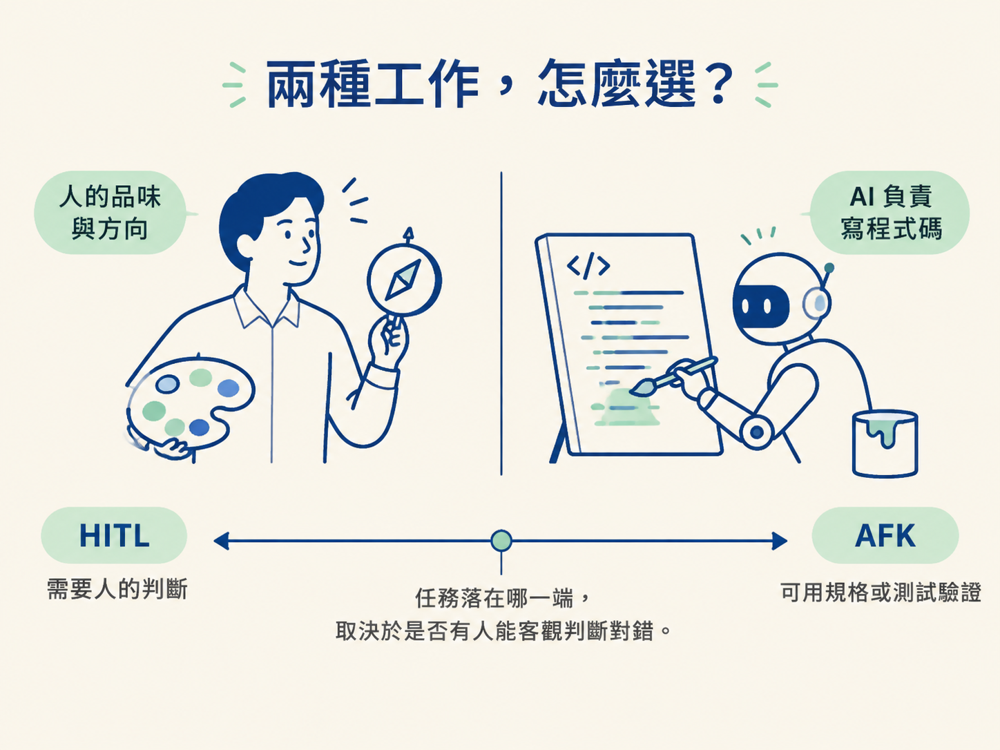
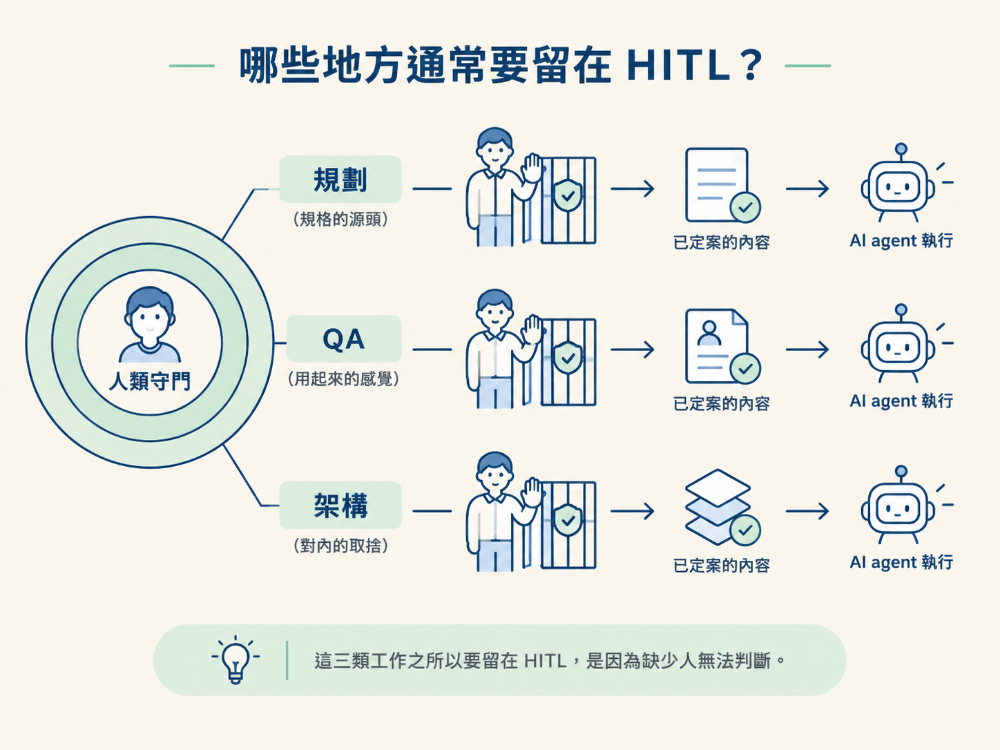
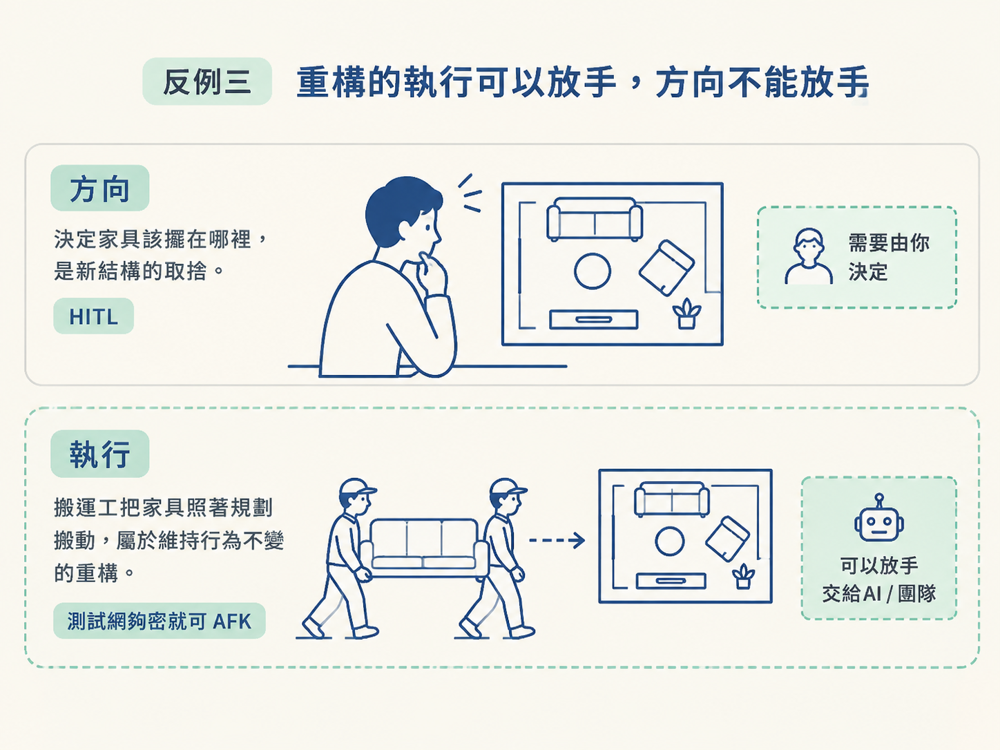

好不容易把 agent 接上 issue 佇列，看著它半夜自己修完幾個 bug，你心裡很難不冒出那個念頭：既然它可以自己做，那我是不是可以全部丟給它，從此只負責收貨？
這個方向對了一半，終點卻不對。能交給 agent 的工作越多，產能確實越高；但有些工作少了人的判斷，最後會變成「功能都在、感覺卻不對」的東西。這跟 agent 聰不聰明無關；那件事得有人回答「我喜歡哪一個」，而喜好並不藏在程式碼裡。
所以，每張 backlog 單子都要先做一個決定：需要人的品味，就留在 human-in-the-loop（以下稱 HITL）；能用規格或測試驗證，就可以交給 away-from-keyboard（以下稱 AFK）。這一節要畫的，就是這條界線。
先把常見的工作放在一起比較。問題不在 agent 能不能做；做完之後有沒有客觀標準可以判斷它做對了，才是重點。
| 工作性質 | 判準 | HITL 還是 AFK | 例子 |
|---|---|---|---|
| 有明確規格、可被測試驗證 | 有一條會紅的測試 | AFK | 修已重現的 bug、補測試、重構 |
| 要在多個可行方案間取捨 | 每個選項都對，差在後果 | HITL | 選服務、定資料模型、切模組 |
| 需要人的感覺或判斷 | 「感覺」本身就是驗收標準 | HITL | 規劃方向、驗收成品、架構決策 |
這張表背後有一個簡單模型：人負責給出品味，AI 負責把這份品味塗到程式碼這塊畫布上。人給方向，AI 做粗活。把 100% 都交給 AI，最後拿到的很可能是一個看似完整、卻根本不能用的應用程式。

實際整理 backlog 時，不需要逐字套理論。拿起一張單子，依序問下面三個問題，就能先判斷它比較靠近 HITL 還是 AFK。
如果有明確規格，或有一條會紅的測試可以證明它做對了，就能考慮 AFK。
例如，修正「下拉選單按了要關掉」的 bug。這個行為有清楚的正解，也可以用測試確認結果，agent 不需要猜你的偏好。
如果條條大路都走得通，但選哪一條會影響後續，這就是取捨，應該留在 HITL。
挑一個即時連線服務、決定 XP 事件要存成什麼形狀，都是這種工作。每個方案可能都能運作，但哪個更適合你的產品與未來維護，不能只靠「能不能跑」來決定。
有些品質不在 agent 的回饋迴圈裡。它可以檢查 typecheck 過不過、測試綠不綠，卻不知道一個功能用起來順不順、夠不夠快，有沒有真的解決你一開始想解決的問題。
這也是為什麼 QA 不能全部放手。只有人實際走進產品用一次，那些「感覺不對」的問題才會浮出來。
AI 可以幫你寫 PRD，也可以把需求整理成條列，但它無法替你決定「我們到底要做什麼」。那個答案在你的腦裡，不在任何文件裡。
少了你的判斷，agent 沒有一個可以反覆對照的真相來源，只能順著字面猜。規劃要留在 HITL，跟 AI 寫得好不好無關，是因為它不知道你心中那個目標長什麼樣。
typecheck 過不過、測試綠不綠，agent 都能依照回饋修正。但「用起來 feel 對不對、夠不夠快、有沒有真的解決問題」，需要人親自驗收。
品味不只用在使用者看得到的畫面，也用在你之後要維護的程式結構。一個模組該切在哪裡、某個抽象值不值得建立，這些都不是單純的對錯題，而是取捨。
因此，架構決策也要留給人。你可以把已經決定好的結構交給 agent 實作，但「結構要長什麼樣子」仍然是你的工作。

上面的分類有一個前提：對錯必須有人能清楚判斷。只要這個前提不成立，看似可以 AFK 的單子就可能要先回到 HITL。
一張寫著「按鈕行為很怪」的單子，不能直接交給 agent。因為「怪」的定義可能只有你知道。
你要先把它改寫成「按下按鈕後應該怎樣」。判斷方法很簡單：如果連你都講不出它「修好後長什麼樣」，那它就是 HITL；等行為被說清楚，才輪到 agent 接手。
「讓這個頁面更快」偏向 HITL，因為「夠快」仍然帶有人的感覺。可是「把這個查詢從 800ms 降到 200ms」就能偏向 AFK，因為目標已經寫成可量測的數字。
把要求說得可測量，常常就能把一張 HITL 單子轉成 AFK。
重構看起來很適合交給 agent，但要先分清楚兩件事。「重構成什麼樣子」是 HITL，因為新結構涉及取捨；如果測試網夠密，只要求維持原本行為不變，那麼實際執行重構可以 AFK。
換句話說，你可以把搬家具的工作交出去，但家具要擺在哪裡，還是要由你決定。

界線畫在品味上：需要人的判斷與感覺，就留在 HITL；可以用規格或測試驗證，就放手成 AFK。實作時對每張單子問三句：有客觀對錯嗎？要在都對的選項間取捨嗎？程式碼全對後，還需要人感覺嗎？
規劃、QA 與架構決策通常需要 HITL；已經被說清楚、能用測試驗證的實作，才適合 AFK。下一節會把 PRD 攤開來，看看為什麼它應該變成一張張可以各自分類的 issue，而不是一份從頭讀到尾的多階段計畫。